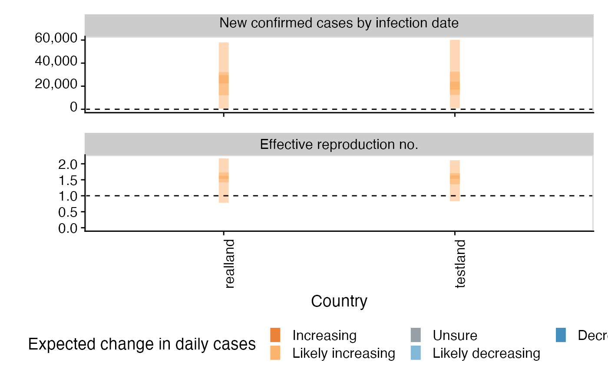
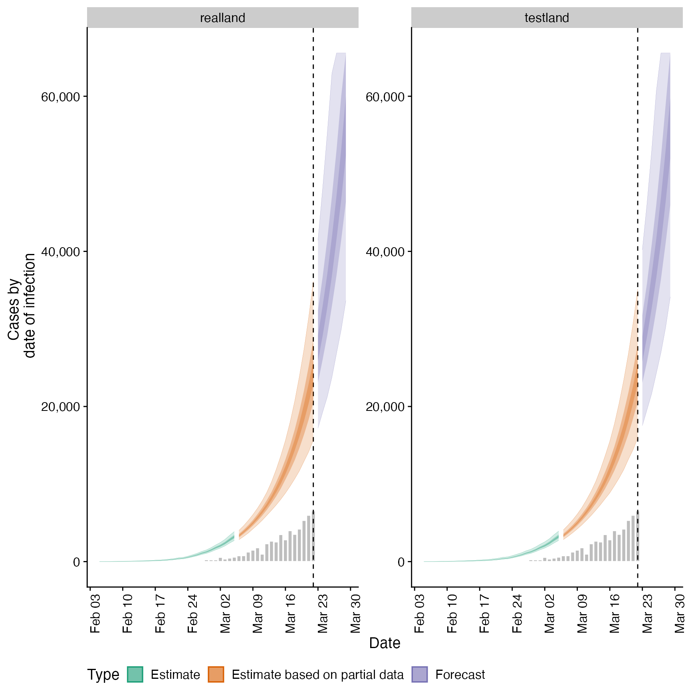
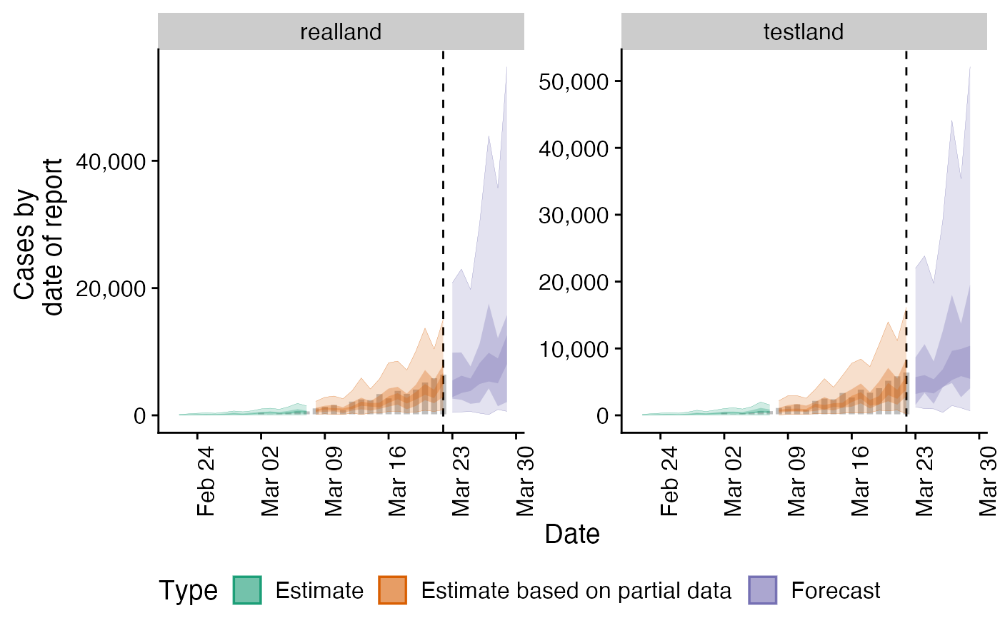
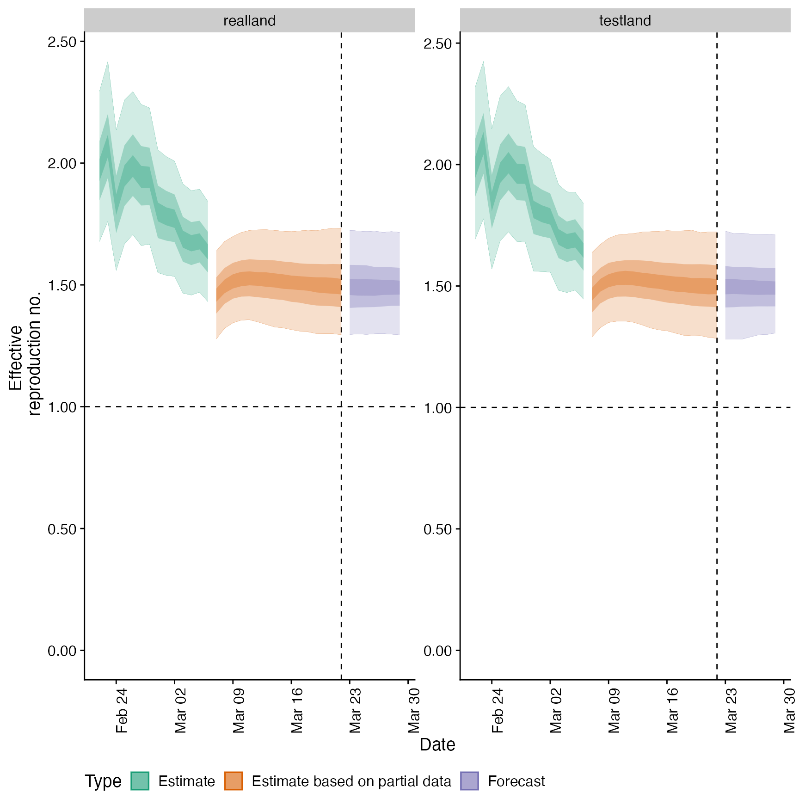
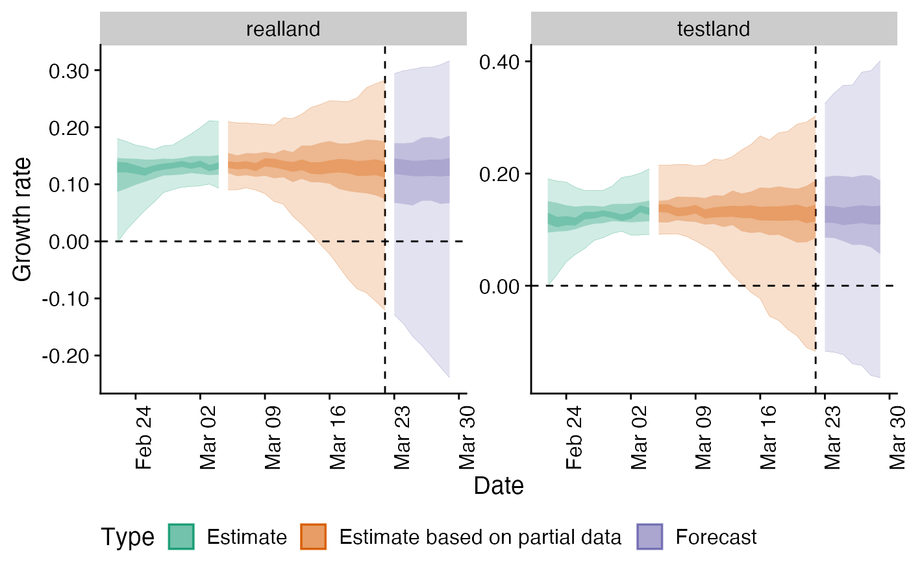
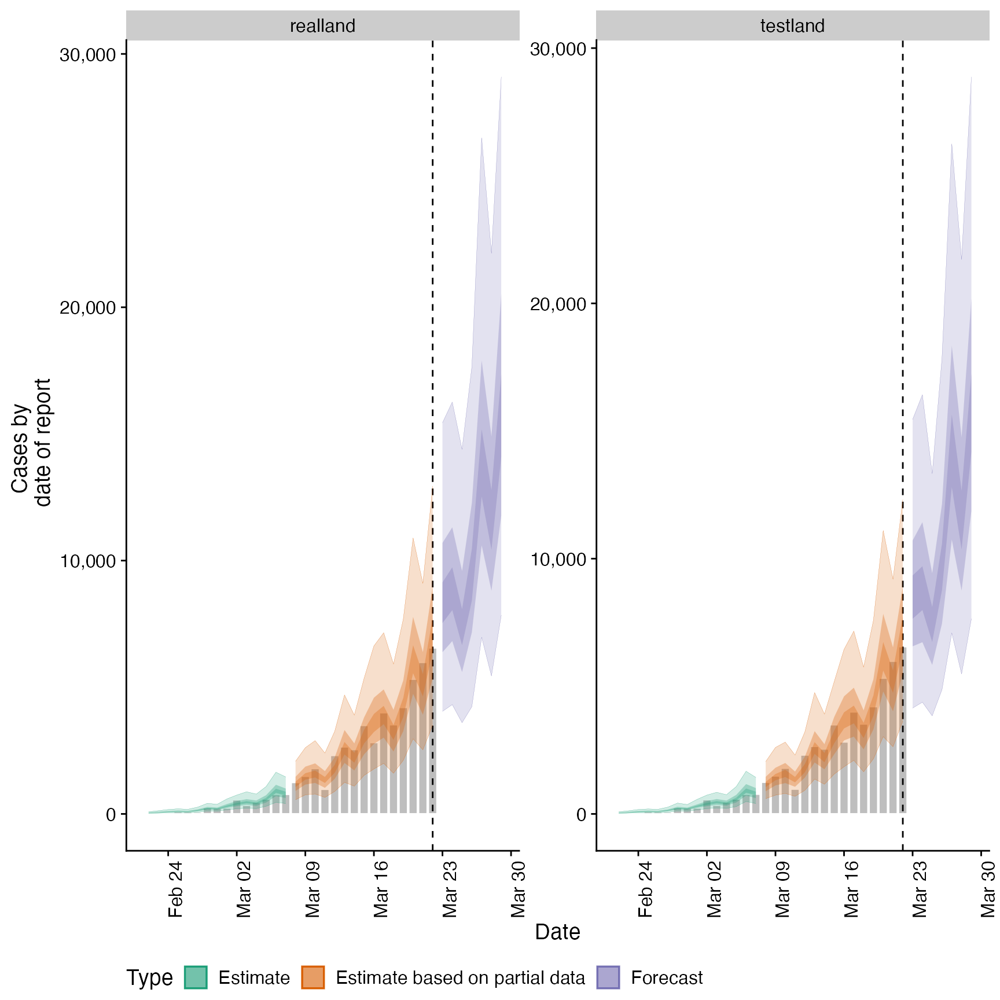
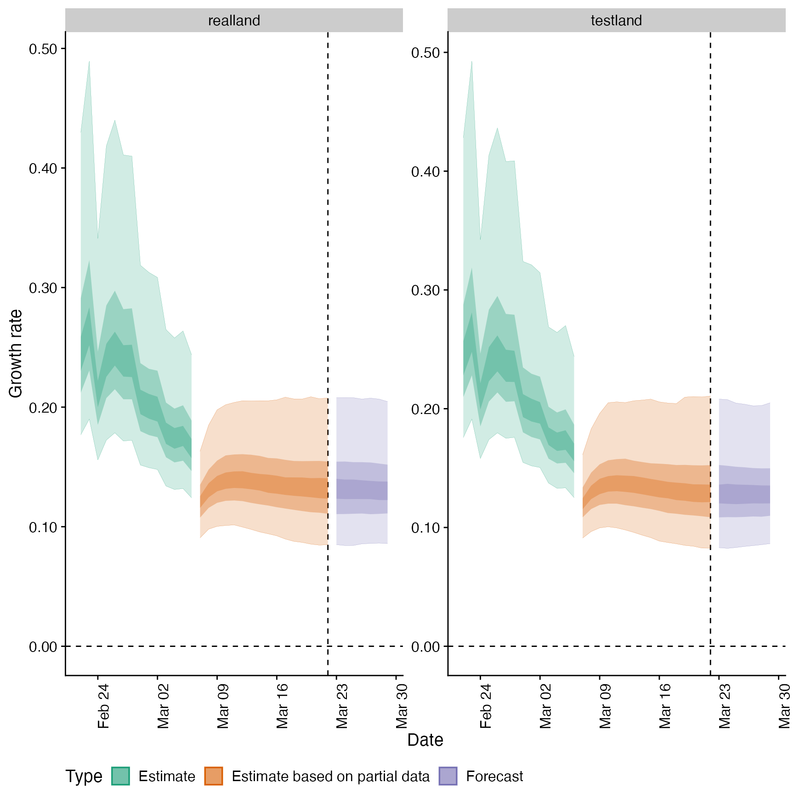

Regional Summary Output
regional_summary.Rd Used to produce summary output either internally in
Used to produce summary output either internally in regional_epinow or externally.
regional_summary( regional_output = NULL, reported_cases, results_dir = NULL, summary_dir = NULL, target_date = NULL, region_scale = "Region", all_regions = TRUE, return_output = FALSE, max_plot = 10 )
Arguments
| regional_output | A list of output as produced by |
|---|---|
| reported_cases | A data frame of confirmed cases (confirm) by date (date), and region ( |
| results_dir | An optional character string indicating the location of the results directory to extract results from. |
| summary_dir | A character string giving the directory in which to store summary of results. |
| target_date | A character string giving the target date for which to extract results (in the format "yyyy-mm-dd"). Defaults to latest available estimates. |
| region_scale | A character string indicating the name to give the regions being summarised. |
| all_regions | Logical, defaults to |
| return_output | Logical, defaults to FALSE. Should output be returned, this automatically updates to TRUE if no directory for saving is specified. |
| max_plot | Numeric, defaults to 10. A multiplicative upper bound on the number of cases shown on the plot. Based on the maximum number of reported cases. |
Value
A list of summary measures and plots
See also
regional_epinow
Examples
# \donttest{ # example delays generation_time <- get_generation_time(disease = "SARS-CoV-2", source = "ganyani") incubation_period <- get_incubation_period(disease = "SARS-CoV-2", source = "lauer") reporting_delay <- estimate_delay(rlnorm(100, log(6), 1), max_value = 30) # example case vector from EpiSoon cases <- example_confirmed[1:30] cases <- data.table::rbindlist(list( data.table::copy(cases)[, region := "testland"], cases[, region := "realland"])) # run basic nowcasting pipeline out <- regional_epinow(reported_cases = cases, generation_time = generation_time, delays = delay_opts(incubation_period, reporting_delay), output = "region", rt = NULL)#> INFO [2020-11-23 14:08:16] Producing following optional outputs: regions#>#>#>#>#> INFO [2020-11-23 14:08:16] Reporting estimates using data up to: 2020-03-22 #> INFO [2020-11-23 14:08:16] No target directory specified so returning output #> INFO [2020-11-23 14:08:16] Producing estimates for: testland, realland #> INFO [2020-11-23 14:08:16] Regions excluded: none #> INFO [2020-11-23 14:08:16] Showing progress using progressr. #> INFO [2020-11-23 14:09:02] Completed estimates for: testland #> INFO [2020-11-23 14:09:48] Completed estimates for: realland #> INFO [2020-11-23 14:09:48] Completed regional estimates #> INFO [2020-11-23 14:09:48] Regions with estimates: 2 #> INFO [2020-11-23 14:09:48] Regions with runtime errors: 0 #> INFO [2020-11-23 14:09:48] No target directory specified so returning timingsregional_summary(regional_output = out$regional, reported_cases = cases)#> INFO [2020-11-23 14:09:48] No summary directory specified so returning summary output#> $latest_date #> [1] "2020-03-22" #> #> $results #> $results$estimates #> $results$estimates$summarised #> region date variable strat type median #> 1: testland 2020-02-22 R <NA> estimate 1.987366e+00 #> 2: testland 2020-02-23 R <NA> estimate 2.090077e+00 #> 3: testland 2020-02-24 R <NA> estimate 1.846222e+00 #> 4: testland 2020-02-25 R <NA> estimate 1.966194e+00 #> 5: testland 2020-02-26 R <NA> estimate 2.005521e+00 #> --- #> 454: realland 2020-03-26 reported_cases <NA> forecast 1.013400e+04 #> 455: realland 2020-03-27 reported_cases <NA> forecast 1.505200e+04 #> 456: realland 2020-03-28 reported_cases <NA> forecast 1.204150e+04 #> 457: realland 2020-03-29 reported_cases <NA> forecast 1.670100e+04 #> 458: realland <NA> reporting_overdispersion <NA> <NA> 1.090969e-02 #> mean sd lower_90 lower_50 lower_20 #> 1: 1.990921e+00 0.1877657 1.692416e+00 1.866808e+00 1.943298e+00 #> 2: 2.093296e+00 0.1969115 1.777052e+00 1.961691e+00 2.041886e+00 #> 3: 1.851435e+00 0.1750223 1.569961e+00 1.736160e+00 1.807532e+00 #> 4: 1.971218e+00 0.1810801 1.686106e+00 1.852076e+00 1.923981e+00 #> 5: 2.012543e+00 0.1824227 1.722804e+00 1.894487e+00 1.963606e+00 #> --- #> 454: 1.095449e+04 4933.9536819 4.555750e+03 7.631250e+03 9.158000e+03 #> 455: 1.627604e+04 7872.7469475 7.192950e+03 1.141550e+04 1.348160e+04 #> 456: 1.296003e+04 5693.1650677 5.456350e+03 9.042500e+03 1.094100e+04 #> 457: 1.815623e+04 8247.4219611 7.892600e+03 1.262775e+04 1.511560e+04 #> 458: 2.136111e-02 0.0381978 2.567047e-03 5.765615e-03 8.490959e-03 #> upper_20 upper_50 upper_90 #> 1: 2.031031e+00 2.104404e+00 2.318130e+00 #> 2: 2.134581e+00 2.212035e+00 2.424526e+00 #> 3: 1.886554e+00 1.957765e+00 2.147465e+00 #> 4: 2.007882e+00 2.083081e+00 2.281651e+00 #> 5: 2.051735e+00 2.128210e+00 2.320578e+00 #> --- #> 454: 1.121600e+04 1.320250e+04 1.989450e+04 #> 455: 1.636920e+04 1.924525e+04 3.030770e+04 #> 456: 1.346820e+04 1.587850e+04 2.248530e+04 #> 457: 1.844000e+04 2.204325e+04 3.219115e+04 #> 458: 1.413475e-02 2.191281e-02 6.797026e-02 #> #> #> #> $summarised_results #> $summarised_results$table #> Region New confirmed cases by infection date #> 1: realland 21862 (14854 -- 31747) #> 2: testland 21475 (14552 -- 31032) #> Expected change in daily cases Effective reproduction no. #> 1: Increasing 1.5 (1.3 -- 1.7) #> 2: Increasing 1.5 (1.3 -- 1.7) #> Rate of growth Doubling/halving time (days) #> 1: 0.13 (0.08 -- 0.21) 5.2 (3.3 -- 8.2) #> 2: 0.13 (0.08 -- 0.21) 5.4 (3.3 -- 8.4) #> #> $summarised_results$data #> region estimate median mean sd lower_90 lower_50 #> 1: realland 21862 (14854 -- 31747) 21862.0 22415.0 5341.0 14854.0 18706.0 #> 2: testland 21475 (14552 -- 31032) 21475.0 22028.0 5214.0 14552.0 18454.0 #> 3: realland 1.5 (1.3 -- 1.7) 1.5 1.5 0.1 1.3 1.4 #> 4: testland 1.5 (1.3 -- 1.7) 1.5 1.5 0.1 1.3 1.4 #> lower_20 upper_20 upper_50 upper_90 metric #> 1: 20594.0 23194.0 25559.0 31747.0 New confirmed cases by infection date #> 2: 20259.0 22865.0 25049.0 31032.0 New confirmed cases by infection date #> 3: 1.5 1.5 1.6 1.7 Effective reproduction no. #> 4: 1.5 1.5 1.6 1.7 Effective reproduction no. #> Expected change in daily cases #> 1: Increasing #> 2: Increasing #> 3: Increasing #> 4: Increasing #> #> $summarised_results$regions_by_inc #> [1] "realland" "testland" #> #> #> $summary_plot#> #> $summarised_measures #> $summarised_measures$rt #> region date strat type median mean sd #> 1: realland 2020-03-07 <NA> estimate based on partial data 1.46 1.46 0.11 #> 2: testland 2020-03-07 <NA> estimate based on partial data 1.46 1.46 0.11 #> 3: realland 2020-03-29 <NA> forecast 1.49 1.49 0.13 #> 4: realland 2020-03-08 <NA> estimate based on partial data 1.49 1.50 0.11 #> 5: testland 2020-03-25 <NA> forecast 1.49 1.50 0.13 #> 6: testland 2020-03-26 <NA> forecast 1.49 1.50 0.13 #> 7: realland 2020-03-26 <NA> forecast 1.49 1.50 0.13 #> 8: realland 2020-03-27 <NA> forecast 1.49 1.50 0.13 #> 9: realland 2020-03-28 <NA> forecast 1.49 1.50 0.13 #> 10: realland 2020-03-23 <NA> forecast 1.49 1.50 0.13 #> 11: realland 2020-03-24 <NA> forecast 1.49 1.50 0.13 #> 12: realland 2020-03-25 <NA> forecast 1.49 1.50 0.13 #> 13: realland 2020-03-22 <NA> estimate based on partial data 1.49 1.50 0.13 #> 14: realland 2020-03-21 <NA> estimate based on partial data 1.49 1.50 0.13 #> 15: testland 2020-03-28 <NA> forecast 1.49 1.50 0.13 #> 16: testland 2020-03-27 <NA> forecast 1.49 1.50 0.13 #> 17: testland 2020-03-29 <NA> forecast 1.49 1.50 0.13 #> 18: testland 2020-03-08 <NA> estimate based on partial data 1.50 1.50 0.11 #> 19: testland 2020-03-22 <NA> estimate based on partial data 1.50 1.50 0.13 #> 20: testland 2020-03-24 <NA> forecast 1.50 1.50 0.13 #> 21: testland 2020-03-23 <NA> forecast 1.50 1.50 0.13 #> 22: testland 2020-03-21 <NA> estimate based on partial data 1.50 1.50 0.13 #> 23: testland 2020-03-19 <NA> estimate based on partial data 1.50 1.50 0.13 #> 24: realland 2020-03-20 <NA> estimate based on partial data 1.50 1.50 0.13 #> 25: testland 2020-03-20 <NA> estimate based on partial data 1.50 1.50 0.13 #> 26: realland 2020-03-19 <NA> estimate based on partial data 1.50 1.50 0.13 #> 27: testland 2020-03-18 <NA> estimate based on partial data 1.50 1.51 0.13 #> 28: realland 2020-03-17 <NA> estimate based on partial data 1.51 1.51 0.12 #> 29: testland 2020-03-17 <NA> estimate based on partial data 1.51 1.51 0.12 #> 30: realland 2020-03-16 <NA> estimate based on partial data 1.51 1.51 0.12 #> 31: testland 2020-03-16 <NA> estimate based on partial data 1.51 1.51 0.12 #> 32: realland 2020-03-18 <NA> estimate based on partial data 1.51 1.51 0.13 #> 33: realland 2020-03-09 <NA> estimate based on partial data 1.51 1.52 0.11 #> 34: testland 2020-03-09 <NA> estimate based on partial data 1.52 1.52 0.11 #> 35: realland 2020-03-15 <NA> estimate based on partial data 1.52 1.52 0.12 #> 36: testland 2020-03-15 <NA> estimate based on partial data 1.52 1.52 0.12 #> 37: testland 2020-03-14 <NA> estimate based on partial data 1.52 1.52 0.12 #> 38: realland 2020-03-14 <NA> estimate based on partial data 1.52 1.52 0.12 #> 39: realland 2020-03-12 <NA> estimate based on partial data 1.52 1.53 0.11 #> 40: realland 2020-03-10 <NA> estimate based on partial data 1.52 1.53 0.11 #> 41: realland 2020-03-13 <NA> estimate based on partial data 1.52 1.53 0.12 #> 42: testland 2020-03-12 <NA> estimate based on partial data 1.53 1.53 0.11 #> 43: realland 2020-03-11 <NA> estimate based on partial data 1.53 1.53 0.11 #> 44: testland 2020-03-10 <NA> estimate based on partial data 1.53 1.53 0.11 #> 45: testland 2020-03-11 <NA> estimate based on partial data 1.53 1.53 0.11 #> 46: testland 2020-03-13 <NA> estimate based on partial data 1.53 1.53 0.12 #> 47: realland 2020-03-06 <NA> estimate 1.63 1.64 0.12 #> 48: testland 2020-03-06 <NA> estimate 1.64 1.64 0.12 #> 49: realland 2020-03-04 <NA> estimate 1.67 1.67 0.13 #> 50: realland 2020-03-05 <NA> estimate 1.68 1.68 0.13 #> 51: testland 2020-03-04 <NA> estimate 1.68 1.68 0.13 #> 52: testland 2020-03-05 <NA> estimate 1.69 1.69 0.12 #> 53: realland 2020-03-03 <NA> estimate 1.69 1.69 0.14 #> 54: testland 2020-03-03 <NA> estimate 1.70 1.70 0.13 #> 55: realland 2020-03-02 <NA> estimate 1.77 1.77 0.15 #> 56: realland 2020-03-01 <NA> estimate 1.78 1.78 0.15 #> 57: testland 2020-03-02 <NA> estimate 1.79 1.79 0.14 #> 58: testland 2020-03-01 <NA> estimate 1.80 1.80 0.15 #> 59: realland 2020-02-29 <NA> estimate 1.80 1.80 0.16 #> 60: testland 2020-02-29 <NA> estimate 1.81 1.82 0.15 #> 61: realland 2020-02-24 <NA> estimate 1.83 1.83 0.17 #> 62: testland 2020-02-24 <NA> estimate 1.85 1.85 0.18 #> 63: realland 2020-02-28 <NA> estimate 1.94 1.94 0.17 #> 64: realland 2020-02-27 <NA> estimate 1.94 1.95 0.18 #> 65: realland 2020-02-25 <NA> estimate 1.95 1.95 0.18 #> 66: testland 2020-02-28 <NA> estimate 1.96 1.96 0.17 #> 67: testland 2020-02-27 <NA> estimate 1.96 1.97 0.18 #> 68: testland 2020-02-25 <NA> estimate 1.97 1.97 0.18 #> 69: realland 2020-02-22 <NA> estimate 1.97 1.98 0.19 #> 70: realland 2020-02-26 <NA> estimate 1.98 1.99 0.18 #> 71: testland 2020-02-22 <NA> estimate 1.99 1.99 0.19 #> 72: testland 2020-02-26 <NA> estimate 2.01 2.01 0.18 #> 73: realland 2020-02-23 <NA> estimate 2.07 2.08 0.20 #> 74: testland 2020-02-23 <NA> estimate 2.09 2.09 0.20 #> region date strat type median mean sd #> lower_90 lower_50 lower_20 upper_20 upper_50 upper_90 #> 1: 1.28 1.38 1.43 1.48 1.53 1.64 #> 2: 1.29 1.39 1.44 1.49 1.54 1.64 #> 3: 1.29 1.41 1.46 1.52 1.57 1.72 #> 4: 1.32 1.42 1.47 1.52 1.57 1.68 #> 5: 1.28 1.42 1.47 1.53 1.58 1.72 #> 6: 1.29 1.42 1.46 1.52 1.58 1.71 #> 7: 1.30 1.41 1.46 1.52 1.57 1.72 #> 8: 1.30 1.41 1.46 1.52 1.57 1.72 #> 9: 1.30 1.41 1.46 1.52 1.57 1.72 #> 10: 1.30 1.41 1.46 1.52 1.58 1.72 #> 11: 1.30 1.41 1.46 1.52 1.58 1.72 #> 12: 1.30 1.41 1.46 1.52 1.58 1.72 #> 13: 1.30 1.41 1.46 1.52 1.58 1.73 #> 14: 1.30 1.41 1.46 1.53 1.59 1.73 #> 15: 1.30 1.42 1.46 1.52 1.57 1.71 #> 16: 1.30 1.42 1.46 1.52 1.58 1.71 #> 17: 1.31 1.42 1.46 1.52 1.57 1.71 #> 18: 1.33 1.43 1.48 1.53 1.57 1.67 #> 19: 1.28 1.41 1.47 1.53 1.58 1.72 #> 20: 1.28 1.41 1.47 1.53 1.58 1.72 #> 21: 1.28 1.41 1.47 1.53 1.58 1.73 #> 22: 1.29 1.41 1.47 1.53 1.59 1.72 #> 23: 1.29 1.42 1.47 1.53 1.59 1.73 #> 24: 1.30 1.41 1.47 1.53 1.59 1.73 #> 25: 1.30 1.42 1.47 1.53 1.59 1.72 #> 26: 1.30 1.42 1.47 1.53 1.59 1.72 #> 27: 1.30 1.42 1.47 1.54 1.59 1.73 #> 28: 1.31 1.43 1.48 1.54 1.59 1.72 #> 29: 1.31 1.43 1.48 1.54 1.59 1.73 #> 30: 1.32 1.43 1.48 1.54 1.59 1.72 #> 31: 1.32 1.43 1.48 1.54 1.59 1.73 #> 32: 1.31 1.42 1.48 1.53 1.59 1.72 #> 33: 1.34 1.44 1.49 1.54 1.59 1.70 #> 34: 1.35 1.45 1.50 1.55 1.60 1.70 #> 35: 1.32 1.44 1.48 1.54 1.60 1.72 #> 36: 1.32 1.44 1.49 1.55 1.60 1.73 #> 37: 1.33 1.44 1.49 1.55 1.60 1.72 #> 38: 1.33 1.44 1.49 1.55 1.60 1.72 #> 39: 1.35 1.45 1.50 1.55 1.60 1.73 #> 40: 1.36 1.45 1.49 1.55 1.60 1.72 #> 41: 1.34 1.45 1.49 1.55 1.60 1.73 #> 42: 1.35 1.45 1.50 1.56 1.61 1.72 #> 43: 1.36 1.45 1.50 1.56 1.61 1.72 #> 44: 1.36 1.46 1.50 1.56 1.60 1.71 #> 45: 1.36 1.46 1.50 1.56 1.61 1.71 #> 46: 1.34 1.45 1.50 1.55 1.61 1.72 #> 47: 1.43 1.55 1.60 1.67 1.72 1.84 #> 48: 1.45 1.56 1.62 1.68 1.73 1.84 #> 49: 1.46 1.58 1.64 1.70 1.76 1.89 #> 50: 1.47 1.59 1.65 1.71 1.76 1.89 #> 51: 1.47 1.60 1.65 1.71 1.77 1.89 #> 52: 1.48 1.61 1.66 1.72 1.77 1.89 #> 53: 1.47 1.60 1.65 1.72 1.78 1.91 #> 54: 1.48 1.61 1.67 1.73 1.79 1.92 #> 55: 1.53 1.68 1.73 1.81 1.87 2.01 #> 56: 1.54 1.68 1.74 1.82 1.89 2.03 #> 57: 1.56 1.70 1.75 1.82 1.88 2.02 #> 58: 1.56 1.70 1.76 1.83 1.90 2.04 #> 59: 1.55 1.69 1.76 1.84 1.91 2.05 #> 60: 1.56 1.71 1.78 1.85 1.92 2.07 #> 61: 1.56 1.71 1.79 1.87 1.95 2.14 #> 62: 1.57 1.74 1.81 1.89 1.96 2.15 #> 63: 1.67 1.83 1.90 1.99 2.06 2.23 #> 64: 1.66 1.83 1.90 1.99 2.07 2.24 #> 65: 1.67 1.82 1.90 1.99 2.07 2.26 #> 66: 1.68 1.85 1.92 2.00 2.07 2.25 #> 67: 1.68 1.85 1.92 2.00 2.08 2.26 #> 68: 1.69 1.85 1.92 2.01 2.08 2.28 #> 69: 1.68 1.85 1.93 2.02 2.09 2.29 #> 70: 1.71 1.87 1.94 2.03 2.12 2.29 #> 71: 1.69 1.87 1.94 2.03 2.10 2.32 #> 72: 1.72 1.89 1.96 2.05 2.13 2.32 #> 73: 1.76 1.94 2.02 2.12 2.20 2.42 #> 74: 1.78 1.96 2.04 2.13 2.21 2.42 #> lower_90 lower_50 lower_20 upper_20 upper_50 upper_90 #> #> $summarised_measures$growth_rate #> region date strat type median mean sd #> 1: testland 2020-03-07 <NA> estimate based on partial data 0.120 0.123 0.023 #> 2: realland 2020-03-07 <NA> estimate based on partial data 0.121 0.123 0.024 #> 3: testland 2020-03-29 <NA> forecast 0.127 0.134 0.038 #> 4: testland 2020-03-28 <NA> forecast 0.128 0.134 0.038 #> 5: testland 2020-03-26 <NA> forecast 0.128 0.134 0.039 #> 6: testland 2020-03-27 <NA> forecast 0.128 0.134 0.039 #> 7: testland 2020-03-25 <NA> forecast 0.128 0.134 0.040 #> 8: testland 2020-03-24 <NA> forecast 0.128 0.134 0.041 #> 9: testland 2020-03-23 <NA> forecast 0.128 0.134 0.041 #> 10: testland 2020-03-22 <NA> estimate based on partial data 0.128 0.134 0.042 #> 11: testland 2020-03-21 <NA> estimate based on partial data 0.128 0.135 0.041 #> 12: testland 2020-03-08 <NA> estimate based on partial data 0.129 0.134 0.030 #> 13: testland 2020-03-19 <NA> estimate based on partial data 0.129 0.135 0.040 #> 14: testland 2020-03-20 <NA> estimate based on partial data 0.129 0.135 0.041 #> 15: testland 2020-03-18 <NA> estimate based on partial data 0.130 0.136 0.039 #> 16: realland 2020-03-28 <NA> forecast 0.130 0.136 0.041 #> 17: realland 2020-03-26 <NA> forecast 0.130 0.136 0.041 #> 18: realland 2020-03-29 <NA> forecast 0.130 0.136 0.042 #> 19: realland 2020-03-08 <NA> estimate based on partial data 0.131 0.135 0.031 #> 20: realland 2020-03-25 <NA> forecast 0.131 0.136 0.041 #> 21: realland 2020-03-27 <NA> forecast 0.131 0.136 0.041 #> 22: realland 2020-03-24 <NA> forecast 0.131 0.137 0.042 #> 23: testland 2020-03-17 <NA> estimate based on partial data 0.132 0.137 0.039 #> 24: realland 2020-03-21 <NA> estimate based on partial data 0.132 0.137 0.042 #> 25: realland 2020-03-23 <NA> forecast 0.132 0.137 0.043 #> 26: realland 2020-03-22 <NA> estimate based on partial data 0.132 0.137 0.043 #> 27: realland 2020-03-19 <NA> estimate based on partial data 0.132 0.138 0.041 #> 28: realland 2020-03-20 <NA> estimate based on partial data 0.132 0.138 0.042 #> 29: testland 2020-03-16 <NA> estimate based on partial data 0.133 0.138 0.038 #> 30: realland 2020-03-18 <NA> estimate based on partial data 0.133 0.139 0.040 #> 31: testland 2020-03-15 <NA> estimate based on partial data 0.134 0.139 0.038 #> 32: realland 2020-03-17 <NA> estimate based on partial data 0.134 0.139 0.039 #> 33: testland 2020-03-09 <NA> estimate based on partial data 0.135 0.140 0.035 #> 34: testland 2020-03-14 <NA> estimate based on partial data 0.135 0.140 0.038 #> 35: realland 2020-03-16 <NA> estimate based on partial data 0.135 0.140 0.039 #> 36: realland 2020-03-09 <NA> estimate based on partial data 0.136 0.141 0.035 #> 37: testland 2020-03-13 <NA> estimate based on partial data 0.136 0.142 0.038 #> 38: realland 2020-03-15 <NA> estimate based on partial data 0.136 0.142 0.039 #> 39: testland 2020-03-10 <NA> estimate based on partial data 0.136 0.143 0.037 #> 40: testland 2020-03-12 <NA> estimate based on partial data 0.137 0.143 0.038 #> 41: testland 2020-03-11 <NA> estimate based on partial data 0.137 0.143 0.038 #> 42: realland 2020-03-14 <NA> estimate based on partial data 0.137 0.143 0.039 #> 43: realland 2020-03-10 <NA> estimate based on partial data 0.138 0.144 0.037 #> 44: realland 2020-03-13 <NA> estimate based on partial data 0.138 0.144 0.038 #> 45: realland 2020-03-11 <NA> estimate based on partial data 0.139 0.145 0.038 #> 46: realland 2020-03-12 <NA> estimate based on partial data 0.139 0.145 0.039 #> 47: testland 2020-03-06 <NA> estimate 0.163 0.172 0.043 #> 48: realland 2020-03-06 <NA> estimate 0.165 0.173 0.045 #> 49: testland 2020-03-04 <NA> estimate 0.171 0.181 0.046 #> 50: testland 2020-03-05 <NA> estimate 0.173 0.184 0.049 #> 51: realland 2020-03-04 <NA> estimate 0.174 0.183 0.049 #> 52: realland 2020-03-05 <NA> estimate 0.175 0.185 0.052 #> 53: testland 2020-03-03 <NA> estimate 0.175 0.186 0.047 #> 54: realland 2020-03-03 <NA> estimate 0.178 0.187 0.050 #> 55: testland 2020-03-02 <NA> estimate 0.195 0.210 0.060 #> 56: realland 2020-03-02 <NA> estimate 0.198 0.211 0.065 #> 57: testland 2020-03-01 <NA> estimate 0.198 0.212 0.061 #> 58: realland 2020-03-01 <NA> estimate 0.200 0.214 0.065 #> 59: testland 2020-02-29 <NA> estimate 0.202 0.216 0.061 #> 60: realland 2020-02-29 <NA> estimate 0.203 0.217 0.065 #> 61: testland 2020-02-24 <NA> estimate 0.209 0.225 0.066 #> 62: realland 2020-02-24 <NA> estimate 0.210 0.227 0.072 #> 63: testland 2020-02-28 <NA> estimate 0.234 0.257 0.092 #> 64: testland 2020-02-27 <NA> estimate 0.235 0.258 0.092 #> 65: testland 2020-02-25 <NA> estimate 0.237 0.260 0.097 #> 66: realland 2020-02-27 <NA> estimate 0.237 0.260 0.100 #> 67: realland 2020-02-28 <NA> estimate 0.238 0.260 0.100 #> 68: realland 2020-02-25 <NA> estimate 0.238 0.263 0.106 #> 69: testland 2020-02-22 <NA> estimate 0.241 0.265 0.102 #> 70: realland 2020-02-22 <NA> estimate 0.243 0.269 0.112 #> 71: testland 2020-02-26 <NA> estimate 0.245 0.272 0.106 #> 72: realland 2020-02-26 <NA> estimate 0.248 0.275 0.116 #> 73: testland 2020-02-23 <NA> estimate 0.264 0.294 0.129 #> 74: realland 2020-02-23 <NA> estimate 0.265 0.300 0.144 #> region date strat type median mean sd #> lower_90 lower_50 lower_20 upper_20 upper_50 upper_90 #> 1: 0.091 0.109 0.115 0.125 0.134 0.161 #> 2: 0.091 0.108 0.116 0.126 0.135 0.163 #> 3: 0.086 0.110 0.120 0.135 0.150 0.205 #> 4: 0.086 0.109 0.120 0.135 0.150 0.203 #> 5: 0.084 0.109 0.120 0.136 0.151 0.204 #> 6: 0.085 0.109 0.120 0.136 0.150 0.202 #> 7: 0.083 0.109 0.120 0.136 0.151 0.205 #> 8: 0.082 0.109 0.120 0.137 0.152 0.208 #> 9: 0.083 0.108 0.120 0.136 0.153 0.208 #> 10: 0.083 0.109 0.121 0.136 0.153 0.211 #> 11: 0.083 0.109 0.121 0.136 0.152 0.210 #> 12: 0.097 0.116 0.124 0.135 0.146 0.183 #> 13: 0.085 0.111 0.122 0.137 0.153 0.210 #> 14: 0.084 0.110 0.122 0.136 0.152 0.210 #> 15: 0.086 0.112 0.123 0.138 0.153 0.204 #> 16: 0.086 0.111 0.122 0.138 0.153 0.207 #> 17: 0.086 0.111 0.123 0.139 0.154 0.207 #> 18: 0.086 0.111 0.122 0.138 0.152 0.205 #> 19: 0.098 0.116 0.124 0.136 0.148 0.185 #> 20: 0.084 0.111 0.123 0.139 0.154 0.208 #> 21: 0.086 0.110 0.123 0.138 0.154 0.208 #> 22: 0.084 0.111 0.123 0.139 0.154 0.208 #> 23: 0.087 0.112 0.125 0.138 0.153 0.205 #> 24: 0.085 0.112 0.124 0.141 0.155 0.207 #> 25: 0.085 0.111 0.123 0.140 0.154 0.208 #> 26: 0.085 0.111 0.123 0.141 0.154 0.208 #> 27: 0.087 0.113 0.125 0.141 0.155 0.207 #> 28: 0.085 0.112 0.125 0.141 0.155 0.209 #> 29: 0.089 0.114 0.125 0.140 0.154 0.206 #> 30: 0.088 0.114 0.126 0.141 0.155 0.207 #> 31: 0.091 0.116 0.127 0.141 0.154 0.208 #> 32: 0.090 0.115 0.127 0.141 0.156 0.208 #> 33: 0.100 0.119 0.128 0.141 0.153 0.196 #> 34: 0.094 0.117 0.128 0.142 0.155 0.207 #> 35: 0.092 0.116 0.128 0.143 0.157 0.206 #> 36: 0.100 0.120 0.130 0.142 0.155 0.198 #> 37: 0.096 0.118 0.129 0.143 0.156 0.207 #> 38: 0.094 0.118 0.128 0.144 0.157 0.205 #> 39: 0.101 0.120 0.130 0.143 0.157 0.205 #> 40: 0.098 0.119 0.130 0.144 0.158 0.205 #> 41: 0.100 0.120 0.131 0.144 0.158 0.206 #> 42: 0.096 0.119 0.130 0.144 0.159 0.205 #> 43: 0.101 0.122 0.132 0.145 0.160 0.202 #> 44: 0.098 0.120 0.131 0.145 0.160 0.205 #> 45: 0.101 0.122 0.132 0.146 0.160 0.204 #> 46: 0.100 0.121 0.132 0.146 0.161 0.205 #> 47: 0.125 0.146 0.156 0.171 0.187 0.244 #> 48: 0.124 0.147 0.157 0.173 0.189 0.244 #> 49: 0.133 0.154 0.164 0.180 0.197 0.264 #> 50: 0.133 0.154 0.165 0.182 0.199 0.270 #> 51: 0.131 0.154 0.165 0.183 0.199 0.258 #> 52: 0.132 0.155 0.167 0.184 0.202 0.264 #> 53: 0.137 0.158 0.169 0.184 0.202 0.269 #> 54: 0.134 0.158 0.169 0.187 0.204 0.265 #> 55: 0.150 0.174 0.187 0.206 0.227 0.314 #> 56: 0.148 0.175 0.188 0.209 0.230 0.308 #> 57: 0.152 0.176 0.189 0.208 0.229 0.321 #> 58: 0.149 0.177 0.190 0.211 0.232 0.313 #> 59: 0.155 0.180 0.193 0.212 0.235 0.324 #> 60: 0.152 0.180 0.194 0.215 0.237 0.319 #> 61: 0.158 0.185 0.199 0.221 0.246 0.342 #> 62: 0.156 0.185 0.200 0.222 0.246 0.341 #> 63: 0.176 0.206 0.223 0.249 0.279 0.409 #> 64: 0.175 0.206 0.223 0.250 0.280 0.408 #> 65: 0.174 0.206 0.223 0.252 0.283 0.413 #> 66: 0.172 0.207 0.226 0.252 0.282 0.411 #> 67: 0.172 0.207 0.225 0.252 0.283 0.410 #> 68: 0.172 0.208 0.225 0.253 0.285 0.418 #> 69: 0.176 0.210 0.228 0.257 0.288 0.428 #> 70: 0.177 0.212 0.230 0.259 0.291 0.430 #> 71: 0.180 0.214 0.231 0.262 0.295 0.436 #> 72: 0.179 0.215 0.235 0.263 0.297 0.440 #> 73: 0.191 0.228 0.248 0.281 0.319 0.493 #> 74: 0.190 0.231 0.252 0.284 0.323 0.489 #> lower_90 lower_50 lower_20 upper_20 upper_50 upper_90 #> #> $summarised_measures$cases_by_infection #> region date strat type median mean sd lower_90 lower_50 #> 1: testland 2020-02-06 <NA> estimate 1 1 0 1 1 #> 2: realland 2020-02-06 <NA> estimate 1 1 0 1 1 #> 3: testland 2020-02-07 <NA> estimate 5 6 2 3 4 #> 4: realland 2020-02-07 <NA> estimate 6 6 2 3 4 #> 5: testland 2020-02-08 <NA> estimate 9 9 3 5 7 #> --- #> 102: realland 2020-03-27 <NA> forecast 39560 40915 11760 24928 33167 #> 103: testland 2020-03-28 <NA> forecast 43620 45239 13223 26619 36325 #> 104: realland 2020-03-28 <NA> forecast 44433 46067 13439 27775 37232 #> 105: testland 2020-03-29 <NA> forecast 48907 50926 15029 29389 40758 #> 106: realland 2020-03-29 <NA> forecast 49890 51828 15223 30946 41848 #> lower_20 upper_20 upper_50 upper_90 #> 1: 1 1 1 2 #> 2: 1 1 1 2 #> 3: 5 6 7 10 #> 4: 5 6 7 9 #> 5: 8 10 11 16 #> --- #> 102: 36887 42210 47067 61418 #> 103: 40552 47034 52238 69387 #> 104: 41535 47489 52854 69769 #> 105: 45683 52812 58997 78186 #> 106: 46914 53548 59257 78253 #> #> $summarised_measures$cases_by_report #> region date strat type median mean sd #> 1: testland 2020-02-22 <NA> estimate 42 46 25 #> 2: realland 2020-02-22 <NA> estimate 43 47 24 #> 3: testland 2020-02-23 <NA> estimate 64 71 37 #> 4: realland 2020-02-23 <NA> estimate 65 73 37 #> 5: testland 2020-02-24 <NA> estimate 85 93 42 #> 6: realland 2020-02-24 <NA> estimate 88 97 47 #> 7: testland 2020-02-26 <NA> estimate 93 102 47 #> 8: realland 2020-02-26 <NA> estimate 95 108 70 #> 9: testland 2020-02-25 <NA> estimate 100 110 50 #> 10: realland 2020-02-25 <NA> estimate 101 115 64 #> 11: testland 2020-02-27 <NA> estimate 134 148 81 #> 12: realland 2020-02-27 <NA> estimate 137 152 73 #> 13: realland 2020-02-29 <NA> estimate 197 211 98 #> 14: testland 2020-02-29 <NA> estimate 201 212 87 #> 15: testland 2020-02-28 <NA> estimate 212 230 100 #> 16: realland 2020-02-28 <NA> estimate 216 240 119 #> 17: testland 2020-03-01 <NA> estimate 300 324 139 #> 18: realland 2020-03-01 <NA> estimate 304 328 153 #> 19: testland 2020-03-02 <NA> estimate 398 425 183 #> 20: realland 2020-03-02 <NA> estimate 408 439 194 #> 21: testland 2020-03-04 <NA> estimate 422 453 200 #> 22: realland 2020-03-04 <NA> estimate 422 459 226 #> 23: testland 2020-03-03 <NA> estimate 449 482 194 #> 24: realland 2020-03-03 <NA> estimate 467 507 225 #> 25: testland 2020-03-05 <NA> estimate 578 617 270 #> 26: realland 2020-03-05 <NA> estimate 584 634 277 #> 27: realland 2020-03-07 <NA> estimate based on partial data 782 834 353 #> 28: testland 2020-03-07 <NA> estimate based on partial data 808 843 329 #> 29: testland 2020-03-06 <NA> estimate 884 936 376 #> 30: realland 2020-03-06 <NA> estimate 896 965 434 #> 31: realland 2020-03-08 <NA> estimate based on partial data 1140 1205 501 #> 32: testland 2020-03-08 <NA> estimate based on partial data 1150 1210 474 #> 33: testland 2020-03-11 <NA> estimate based on partial data 1314 1403 580 #> 34: realland 2020-03-11 <NA> estimate based on partial data 1324 1438 658 #> 35: testland 2020-03-09 <NA> estimate based on partial data 1434 1518 625 #> 36: realland 2020-03-09 <NA> estimate based on partial data 1446 1540 634 #> 37: testland 2020-03-10 <NA> estimate based on partial data 1572 1666 696 #> 38: realland 2020-03-10 <NA> estimate based on partial data 1585 1688 756 #> 39: testland 2020-03-12 <NA> estimate based on partial data 1752 1877 776 #> 40: realland 2020-03-12 <NA> estimate based on partial data 1782 1885 790 #> 41: realland 2020-03-14 <NA> estimate based on partial data 2177 2317 929 #> 42: testland 2020-03-14 <NA> estimate based on partial data 2198 2330 1028 #> 43: realland 2020-03-13 <NA> estimate based on partial data 2576 2774 1170 #> 44: testland 2020-03-13 <NA> estimate based on partial data 2622 2754 1061 #> 45: testland 2020-03-15 <NA> estimate based on partial data 3012 3213 1295 #> 46: realland 2020-03-15 <NA> estimate based on partial data 3051 3199 1312 #> 47: realland 2020-03-18 <NA> estimate based on partial data 3283 3510 1565 #> 48: testland 2020-03-18 <NA> estimate based on partial data 3306 3514 1443 #> 49: testland 2020-03-16 <NA> estimate based on partial data 3666 3888 1603 #> 50: realland 2020-03-16 <NA> estimate based on partial data 3682 3937 1688 #> 51: testland 2020-03-17 <NA> estimate based on partial data 3864 4123 1706 #> 52: realland 2020-03-17 <NA> estimate based on partial data 3911 4232 1903 #> 53: realland 2020-03-19 <NA> estimate based on partial data 4270 4630 1989 #> 54: testland 2020-03-19 <NA> estimate based on partial data 4324 4655 1905 #> 55: testland 2020-03-21 <NA> estimate based on partial data 5180 5477 2151 #> 56: realland 2020-03-21 <NA> estimate based on partial data 5254 5572 2274 #> 57: testland 2020-03-20 <NA> estimate based on partial data 6224 6748 2916 #> 58: realland 2020-03-20 <NA> estimate based on partial data 6232 6736 2913 #> 59: testland 2020-03-22 <NA> estimate based on partial data 7189 7717 3234 #> 60: realland 2020-03-22 <NA> estimate based on partial data 7192 7617 3154 #> 61: realland 2020-03-25 <NA> forecast 7726 8529 4364 #> 62: testland 2020-03-25 <NA> forecast 7786 8273 3488 #> 63: realland 2020-03-23 <NA> forecast 8706 9381 4094 #> 64: testland 2020-03-23 <NA> forecast 8714 9376 4249 #> 65: testland 2020-03-24 <NA> forecast 9044 9826 4412 #> 66: realland 2020-03-24 <NA> forecast 9351 10244 4692 #> 67: testland 2020-03-26 <NA> forecast 10054 10961 4951 #> 68: realland 2020-03-26 <NA> forecast 10134 10954 4934 #> 69: realland 2020-03-28 <NA> forecast 12042 12960 5693 #> 70: testland 2020-03-28 <NA> forecast 12177 13205 5784 #> 71: testland 2020-03-27 <NA> forecast 14440 15588 6867 #> 72: realland 2020-03-27 <NA> forecast 15052 16276 7873 #> 73: testland 2020-03-29 <NA> forecast 16504 17774 8007 #> 74: realland 2020-03-29 <NA> forecast 16701 18156 8247 #> region date strat type median mean sd #> lower_90 lower_50 lower_20 upper_20 upper_50 upper_90 #> 1: 20 32 38 47 56 87 #> 2: 19 32 39 48 57 90 #> 3: 31 48 58 71 84 130 #> 4: 31 50 59 72 86 135 #> 5: 42 64 77 95 112 169 #> 6: 44 67 79 97 114 185 #> 7: 46 71 84 103 122 181 #> 8: 45 71 85 105 127 195 #> 9: 51 77 91 112 130 201 #> 10: 51 78 91 113 135 218 #> 11: 64 104 122 148 172 262 #> 12: 66 106 125 151 183 280 #> 13: 95 149 178 216 254 379 #> 14: 102 155 181 219 252 365 #> 15: 105 164 191 235 273 420 #> 16: 106 167 198 239 285 440 #> 17: 151 234 276 329 387 561 #> 18: 149 236 278 333 387 570 #> 19: 205 310 359 434 504 731 #> 20: 213 320 374 441 515 768 #> 21: 214 315 380 466 540 803 #> 22: 205 328 388 467 543 810 #> 23: 226 353 412 497 573 847 #> 24: 232 363 426 512 601 927 #> 25: 288 447 529 633 738 1053 #> 26: 277 451 525 654 763 1157 #> 27: 388 591 712 855 994 1452 #> 28: 396 623 739 875 1008 1387 #> 29: 452 681 808 965 1125 1595 #> 30: 446 702 826 983 1137 1656 #> 31: 554 870 1043 1246 1444 2085 #> 32: 578 900 1053 1260 1453 2044 #> 33: 663 1017 1197 1447 1674 2439 #> 34: 666 1013 1211 1452 1711 2585 #> 35: 701 1090 1305 1573 1816 2624 #> 36: 728 1128 1322 1585 1830 2609 #> 37: 755 1208 1433 1722 1998 2880 #> 38: 752 1177 1423 1747 2046 2984 #> 39: 923 1364 1604 1917 2219 3227 #> 40: 892 1373 1630 1911 2217 3275 #> 41: 1121 1718 2001 2413 2751 3901 #> 42: 1117 1702 2002 2418 2806 3934 #> 43: 1305 2010 2370 2835 3256 4868 #> 44: 1311 2025 2392 2848 3304 4712 #> 45: 1547 2368 2795 3331 3827 5355 #> 46: 1467 2326 2759 3308 3764 5552 #> 47: 1610 2538 3003 3610 4191 6123 #> 48: 1604 2572 3016 3611 4198 6101 #> 49: 1865 2833 3338 4001 4650 6507 #> 50: 1811 2820 3379 4014 4750 6931 #> 51: 1885 2998 3528 4243 4937 7235 #> 52: 1911 2968 3518 4262 5046 7651 #> 53: 2189 3317 3922 4702 5524 8268 #> 54: 2293 3368 3967 4740 5590 8031 #> 55: 2556 4015 4720 5642 6549 9556 #> 56: 2574 4076 4807 5769 6729 9606 #> 57: 3204 4850 5609 6821 8099 12210 #> 58: 3017 4825 5674 6898 8048 11925 #> 59: 3587 5598 6584 7898 9304 13471 #> 60: 3349 5457 6532 7963 9343 13358 #> 61: 3683 5862 7024 8517 10102 15402 #> 62: 3766 5916 7006 8486 9960 14450 #> 63: 4202 6646 7899 9578 11322 16871 #> 64: 4410 6669 7893 9583 11178 16493 #> 65: 4449 6957 8317 10017 11840 17603 #> 66: 4420 7146 8508 10241 12262 19010 #> 67: 5014 7610 9070 11106 13104 19960 #> 68: 4556 7631 9158 11216 13202 19894 #> 69: 5456 9042 10941 13468 15878 22485 #> 70: 6011 9203 10859 13607 16027 23655 #> 71: 6909 10873 13019 16010 18716 28699 #> 72: 7193 11416 13482 16369 19245 30308 #> 73: 7879 12313 14739 18124 21542 31984 #> 74: 7893 12628 15116 18440 22043 32191 #> lower_90 lower_50 lower_20 upper_20 upper_50 upper_90 #> #> #> $reported_cases #> date confirm region #> 1: 2020-02-22 14 testland #> 2: 2020-02-23 62 testland #> 3: 2020-02-24 53 testland #> 4: 2020-02-25 97 testland #> 5: 2020-02-26 93 testland #> 6: 2020-02-27 78 testland #> 7: 2020-02-28 250 testland #> 8: 2020-02-29 238 testland #> 9: 2020-03-01 240 testland #> 10: 2020-03-02 561 testland #> 11: 2020-03-03 347 testland #> 12: 2020-03-04 466 testland #> 13: 2020-03-05 587 testland #> 14: 2020-03-06 769 testland #> 15: 2020-03-07 778 testland #> 16: 2020-03-08 1247 testland #> 17: 2020-03-09 1492 testland #> 18: 2020-03-10 1797 testland #> 19: 2020-03-11 977 testland #> 20: 2020-03-12 2313 testland #> 21: 2020-03-13 2651 testland #> 22: 2020-03-14 2547 testland #> 23: 2020-03-15 3497 testland #> 24: 2020-03-16 2823 testland #> 25: 2020-03-17 4000 testland #> 26: 2020-03-18 3526 testland #> 27: 2020-03-19 4207 testland #> 28: 2020-03-20 5322 testland #> 29: 2020-03-21 5986 testland #> 30: 2020-03-22 6557 testland #> 31: 2020-02-22 14 realland #> 32: 2020-02-23 62 realland #> 33: 2020-02-24 53 realland #> 34: 2020-02-25 97 realland #> 35: 2020-02-26 93 realland #> 36: 2020-02-27 78 realland #> 37: 2020-02-28 250 realland #> 38: 2020-02-29 238 realland #> 39: 2020-03-01 240 realland #> 40: 2020-03-02 561 realland #> 41: 2020-03-03 347 realland #> 42: 2020-03-04 466 realland #> 43: 2020-03-05 587 realland #> 44: 2020-03-06 769 realland #> 45: 2020-03-07 778 realland #> 46: 2020-03-08 1247 realland #> 47: 2020-03-09 1492 realland #> 48: 2020-03-10 1797 realland #> 49: 2020-03-11 977 realland #> 50: 2020-03-12 2313 realland #> 51: 2020-03-13 2651 realland #> 52: 2020-03-14 2547 realland #> 53: 2020-03-15 3497 realland #> 54: 2020-03-16 2823 realland #> 55: 2020-03-17 4000 realland #> 56: 2020-03-18 3526 realland #> 57: 2020-03-19 4207 realland #> 58: 2020-03-20 5322 realland #> 59: 2020-03-21 5986 realland #> 60: 2020-03-22 6557 realland #> date confirm region #> #> $high_plots #> $high_plots$infections#> #> $high_plots$reports#> #> $high_plots$R#> #> $high_plots$growth_rate#> #> #> $plots #> $plots$infections#> #> $plots$reports#> #> $plots$R#> #> $plots$growth_rate#> #># }